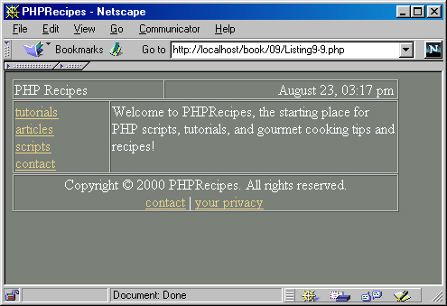

ГЛАВА 9
РНР и динамическое создание страниц
Многие читатели в любой книге о компьютерах пролистывают все, что не представляет непосредственного интереса, и переходят к тому, что они действительно хотят знать. Лично я поступаю именно так. Впрочем, в этом нет ничего страшного — редко встречаются технические книги, которые необходимо читать от корки до корки. А может, вы именно так и поступили — пропустили восемь начальных глав и взялись за эту главу, потому что у нее было самое интересное название? Да и кому захочется тратить время на подробности, когда на работе «горит» очередной проект?
К счастью, подобная торопливость не помешает вам нормально усвоить материал второй части книги, посвященной использованию РНР для построения сайтов и взаимодействия с Web. В этой главе вы научитесь легко модифицировать содержимое web-страниц и осуществлять навигацию в Web при помощи ссылок и различных стандартных функций. Следующая глава дополнит изложенный материал - в ней подробно рассматриваются средства взаимодействия с пользователем в формах HTML В главе 11 описана организация интерфейса с базами данных. В остальных главах второй части рассматриваются нетривиальные аспекты web-программирования на РНР.
Однако следует помнить о том, что материал части 1 абсолютно необходим для нормального владения РНР. Предполагается, что вы все же прочитали первую часть, поэтому в примерах будут использоваться многие из описанных ранее концепций. Итак, если вы пролистали часть книги, вам придется время от времени возвращаться к предыдущим главам и наверстывать упущенное.
По ссылкам пользователь может переходить как на обычные страницы HTML, так и на страницы, содержащие код РНР:
<а href = "date.php"><View today's date</a>
Если щелкнуть на ссылке, в браузере будет загружена страница с именем date.php. Просто, не правда ли? Развивая приведенный пример, можно воспользоваться переменной для построения динамической ссылки:
<?
$link = "date.php";
print "<а href = \"$link\">View today's date</a> <br>\n"
?>
Вероятно, у вас возник вопрос — почему в коде ссылки перед кавычками (") ставится обратная косая черта (\)? Дело в том, что кавычки в РНР являются специальными символами и используются в качестве ограничителей строк. Следовательно, кавычки-литералы в строках должны экранироваться.
 Если
необходимость экранировать кавычки вас
раздражает, просто включите режим magic_quotes_gpc
в файле php.ini. В результате все апострофы,
кавычки, обратные косые черты и нуль-символы.
в тексте автоматически экранируются!
Если
необходимость экранировать кавычки вас
раздражает, просто включите режим magic_quotes_gpc
в файле php.ini. В результате все апострофы,
кавычки, обратные косые черты и нуль-символы.
в тексте автоматически экранируются!
Разовьем приведенный пример. Для быстрого вывода списка ссылок в браузере можно воспользоваться массивом:
<?
// Создать массив разделов
$contents - array("tutorials", "articles", "scripts", "contact");
// Перебрать и последовательно вывести каждый элемент массива
for ($i = 0; $i < sizeof($contents; $i++)
print " • <a href = \"".$contents[$i].".php\">".$contents[$i]."</a><br>\n";
// • - специальное обозначение точки-маркера endfor;
?>
Мы подошли к одной из моих любимых возможностей РНР. Шаблоном (применительно к web-программированию) называется часть web-документа, которую вы собираетесь использовать в нескольких страницах. Шаблоны, как и функции РНР, избавляют вас от лишнего копирования/вставки фрагментов содержания страницы и программного кода. С увеличением масштабов сайта значение шаблонов возрастает, поскольку они позволяют легко и быстро проводить модификации на уровне целого сайта. В этом разделе будут описаны некоторые возможности, которые открываются при использовании простейших шаблонов.
Как правило, общие фрагменты содержания/кода (то есть шаблоны) сохраняются в отдельных файлах. При построении web-документа вы просто «включаете» эти файлы в соответствующие места страницы. В РНР для этого существуют две функции: include( ) и require( ).
Одним из самых выдающихся аспектов РНР является возможность построения шаблонов и программных библиотек и их последующей вставки в новые сценарии. Применение библиотек экономит время и усилия по использованию общих функциональных возможностей на разных web-сайтах. Читатели, обладающие
опытом программирования на других языках (например, С, C++ или Java), хорошо знакомы с концепцией библиотек функций и их использованием в программах для расширения функциональных возможностей.
Включение одного или нескольких файлов в сценарий осуществляется стандартными функциями РНР require( ) и include( ). Как будет показано в следующем разделе, каждая из этих функций применяется в определенной ситуации.
В РНР существуют четыре функции для включения файлов в сценарии РНР:
Несмотря на сходство имен, эти функции решают разные задачи.
include( )
Функция include( ) включает содержимое файла в сценарий. Синтаксис функции include( ):
include (file файл]
У функции include( ) есть одна интересная особенность — ее можно выполнять условно. Например, если вызов функции включен в блок команды if. то файл включается в программу лишь в том случае, если условие i f истинно. Если функция includeO используется в условной команде, то она должна быть заключена в фигурные скобки или в альтернативные ограничители. Сравните различия в синтаксисе листингов 9.1 и 9.2.
Листинг 9.1. Неправильное использование include( )
if (some_conditional)
include ('text91a.txt'); else
include ('text91b.txt');
Листинг 9.2. Правильное использование include( )
if (some_conditional) :
include ('text91a.txt');
else :
include ('text91b.txt');
endif;
Весь код РНР во включаемом файле обязательно заключается в теги РНР. Не стоит полагать, что простое сохранение команды РНР в файле обеспечит ее правильную обработку:
print "this is an invalid include file";
Вместо этого необходимо заключить команду в соответствующие теги, как показывает следующий пример:
<?
print "this is an invalid include file";
?>
include_once( )
Функция include_once( ) делает то же, что и include( ), за одним исключением: прежде чем включать файл в программу, она проверяет, не был ли он включен ранее. Если файл уже был включен, вызов include_once( ) игнорируется, а если нет — происходит стандартное включение файла. Во всем остальном include_once( ) ничем не отличается от include( ). Синтаксис функции include_once( ):
include_once (file файл)
require ( )
В целом функция require( ) похожа на include( ) — она тоже включает шаблон в тот файл, в котором находится вызов require( ). Синтаксис функции require( ):
require (file файл)
Тем не менее, между функциями require( ) и include( ) существует одно важное различие. Файл, определяемый параметром require( ), включается в сценарий независимо от местонахождения require( ) в сценарии. Например, при вызове requi ге( ) в блоке if при ложном условии файл все равно будет включен в сценарий!
Во многих ситуациях бывает удобно создать файл с переменными и другой информацией, которая используется в масштабах сайта, и затем подключать его по мере необходимости. Хотя имя этого файла выбирается произвольно, я обычно называю его init.tpl (сокращение от «initializaion.template»). В листинге 9.3 показано, как выглядит очень простой файл init.tpl. В листинге 9.4 содержимое init.tpl включается в сценарий командой require( ).
Листинг 9.3. Пример инициализационного файла <?
<?
$site_title = "РНР Recipes";
$contact_email = "wjgilmore@hotmail.com";
$contact_name = "WJ Gilmore";
?>
Листинг 9.4. Использование файла init.tpl
<? require ('init.tpl ');?>
<html>
<head>
<title><? print $site_title; ?></title>
</head>
<body>
<? print "Welcome to $site_title. For questions, contact <a href =
\"mai1 to:$contact_email\">$contact_name</a>."; ?>
</body>
</html>
 Передача
URL при вызове require( ) допускается лишь при
включенном режиме «URL fopen wrappers» (этот режим
включен по умолчанию).
Передача
URL при вызове require( ) допускается лишь при
включенном режиме «URL fopen wrappers» (этот режим
включен по умолчанию).
С увеличением размеров сайта может оказаться, что некоторые файлы включаются в сценарий по несколько раз. Иногда это не вызывает проблем, но в некоторых случаях повторное включение файла приводит к сбросу значений изменившихся переменных. Если во включаемом файле определяются функции, могут возникнуть конфликты имен. Учитывая сказанное, мы приходим к следующей функции — require_once( ).
require_once( )
Функция require_once( ) гарантирует, что файл будет включаться в сценарий всего один раз. После вызова requi rе_оnсе( ) все дальнейшие попытки включения того же файла игнорируются. Синтаксис функции requiге_оnсе( ):
require_once(file файл)
Если не считать дополнительной проверки, в остальном эта функция аналогична
require( ).
Вероятно, вы станете чаще использовать функции включения файлов по мере того, как ваши web-приложения начнут увеличиваться в размерах. Эти функции часто встречаются в примерах данной книги, чтобы сократить избыточность программного кода. Первые примеры рассматриваются в следующем разделе, посвященном принципам построения базовых шаблонов.
При определении структуры типичной web-страницы я обычно разбиваю ее на три части: заголовок, основную часть и колонтитул. Как правило, в большинстве правильно организованных web-сайтов присутствует заголовок, который практически не изменяется; в основной части выводится запрашиваемое содержание сайта, поэтому она часто изменяется; наконец, колонтитул содержит информацию об авторских правах и навигационные ссылки. Колонтитул, как и заголовок, обычно остается неизменным. Не поймите меня превратно — я вовсе не пытаюсь подавлять ваши творческие устремления. Мне встречалось немало великолепных сайтов, не следовавших этим принципам. Я всего лишь пытаюсь выработать общую структуру, которая может послужить отправной точкой для дальнейшей работы.
Заголовочный файл (вроде приведенного в листинге 9.5) присутствует практически в каждом из моих web-сайтов с поддержкой РНР. В этом файле содержится
информация, действующая на уровне всего сайта, — например, заголовок, контактные данные и некоторые компоненты кода HTML-страницы.
Листинг 9.5. Пример файла заголовка
<?
// Файл: header.tpl
// Назначение: заголовочный файл для сайта PhpRecipes .
// Дата: 22 августа 2000 г.
$site_name = "PHPRecipes";
$site_email= "wjgnmore@hotrnail.com";
$site_path = "http://localhost/phprecipes";
?>
<html>
<head>
<title> <? print $site_name; ?> </title>
</head>
<body bgcolor="#7b8079" text="#ffffff" link="fe7d387" alink="#e7d387" vlink="#e7f0e4">
<table width="95%" cellpadding="0" cellspacing="0" border="1">
<tr>
<td valign = "top">
PHPRecipes
</td>
<td valign = "top" align="right">
<?
// Вывести текущую дату и время
print date ("F d, h:i a");
?>
</td>
</tr>
</table>
Довольно часто доступ к включаемым файлам со стороны посетителей ограничивается, особенно если эти файлы содержат конфиденциальную информацию (например, пароли). В Apache можно запретить просмотр некоторых файлов редактированием файлов http.conf или htaccess. Следующий пример показывает, как запретить просмотр всех файлов с расширением .tpl:
<Files "*.tpl">
Order allow,deny
Allow from 127.0.0.1
Deny from all
</Files>
 РНР
и проблемы безопасности сайтов подробно
описаны в главе 16.
РНР
и проблемы безопасности сайтов подробно
описаны в главе 16.
Колонтитулом (footer) обычно называется информация, расположенная в нижней части страниц сайта, — контактные данные, ссылки и информация об авторских правах. Эту информацию можно разместить в отдельном файле и включать в качестве шаблона так же, как это делается с заголовком. Допустим, c наступлением нового года вам потребовалось изменить информацию об авторских правах и привести ее к виду «Copyright © 2000-2001». Есть два пути: потратить канун Рождества на лихорадочное редактирование сотен статических страниц или воспользоваться шаблоном наподобие приведенного в листинге 9.6. Одно простое изменение — и вы можете возвращаться к праздничным хлопотам.
Листинг 9.6. Пример файла колонтитула (footer.tpl)
<table width="95%" cellspacing="0" cellpadding="0" border="1">
<tr><td valign="top" align="middle">
Copyright © 2000 PHPRecipes. All rights reserved.<br>
<a href = "mailto:<?=$site_email;?>">contact</a> |
<a href = "<?=$site_path:?>/
privacy.php">your privacy</a>
</td></tr>
</table>
</body>
</html>
Обратите внимание на использование глобальной переменной $site_email в файле колонтитула. Значение этой переменной действует в масштабах всей страницы, а мы предполагаем, что файлы header.tpl и footer.tpl будут включены в одну итоговую страницу. Также обратите внимание на присутствие пути $site_path в ссылке Privacy (Конфиденциальность). Я всегда включаю в шаблоны полные пути ко всем ссылкам — если бы URL ссылки состоял из одного имени privacy.php, то файл колонтитула был бы жестко привязан к конкретному каталогу.
В основной части страницы подключается содержимое заголовка и колонтитула. В сущности, именно основная часть содержит информацию, интересующую посетителей сайта. Заголовок эффектно выглядит, колонтитул содержит полезные сведения, но именно ради основной части страницы пользователи снова и снова возвращаются на сайт. Хотя я не смогу предоставить каких-либо рекомендаций по поводу конкретной структуры страниц, шаблоны, подобные приведенному в листинге 9.7, основательно упрощают администрирование страниц.
Листинг 9.7. Пример основной части страницы (index_body.tpl)
<table width="95%" cellspacing="0" cellpadding="0" border="1">
<tr>
<td valign="top" width="25%>
<a href = "<?=$site_path;?>/tutorials.php">tutorials</a>
<br>
<a href = "<?=$site_path:?>/articles.php">articles</a>
<br>
<a href = "<?=$site_path;?>/scripts.php">scripts</a>
<br>
<a href = "<?=$site_path;?>/contact.php">contact</a>
<br>
</td>
<td valign="top" width="75%">
Welcome to PHPRecipes. the starting place for PHP scripts, tutorials,
and information about gourmet cooking!
</td>
</tr>
</table>
Все вместе: заголовок, колонтитул и основная часть
Вероятно, мое настроение лучше всего выражается фразой полковника «Ганнибала» Смита (Джордж Пеппард) из знаменитого сериала «Команда А»: «Люблю, когда все становится на свои места». Я испытываю нечто подобное, когда разрозненные шаблоны объединяются и образуют полный web-документ. Комбинируя три секции документа: header.tpl, index_body.tpl и footer.tpl, — можно быстро построить простейшую страницу вроде той, что приведена в листинге 9.8.
Листинг 9.8. Построение страницы index.php включением нескольких файлов
<?
// Файл: index.php
// Назначение: домашняя страница PHPRecipes
// Дата: 23 августа 2000 г.
// Вывести заголовок
include ("header.tpl");
// Вывести основную часть
include ("index_body.tpl");
// Вывести колонтитул
include ("footer.tpl");
?>
Ну как? Три простые команды — и перед вами готовая страница. Текст итоговой страницы приведен в листинге 9.9.
Листинг 9.9. Страница HTML, построенная в листинге 9.8 (index.php)
<html>
<head>
<title> PHPRecipes </title>
</head>
<body bgcolor="#7b8079" text="#ffffff" link="#e7d387" alink="#e7d387" vlink="#e7f0e4">
<table width = "95%" cellpadding="0" cellspacing="0" border="1">
<tr>
<td valign = "top">
PHP Recipes
</td>
<td valign = "top" align="right">
August 23, 03:17 pm
</td>
</tr>
</table><table width="95%" cellspacing="0" cellpadd1ng="0" border="1">
<tr>
<td valign="top" width="25%">
<a href = "htfp://localriost/phprecipes/tutorials.php">tutorials
</a> <br>
<a href = "http://localhost/phprecipes/articles.php">articles
</a> <br>
<a href = "http://localhost/phprecipes/scripts.php">scripts</a>
<br>
<a href = "http://localhost/phprecipes/contact.php">contact</a>
<br>
</td>
<td valign="top" width="75%">
Welcome to PHPRecipes, the starting place for PHP scripts, tutorials,
and gourmet cooking tips and recipes!
</td>
</tr>
</table><table width="95%" cellspacing="0" cellpadding="0" border="1">
<tr><td valign="top" align="middle">
Copyright © 2000 PHPRecipes. All rights reserved.<br>
<a href = "mailto:wj@hotmail .com">contact</a> |
<a href = "http://localhost/phprecipes/privacy.php">your privacy</a>
</td></tr>
</table>
</body>
</html>
На рис. 9.1 показано, как полученная страница выглядит в браузере. Хотя я обычно не пользуюсь рамками таблиц, на этот раз я их вывел, чтобы на рисунке более наглядно выделялись три части страницы.

Рис. 9.1. Внешний вид страницы, построенной в листинге 9.8
Во втором (на мой взгляд, более предпочтительном) варианте шаблоны оформляются в виде функций, находящихся в отдельном файле. Тем самым обеспечивается дополнительное структурирование ваших шаблонов. Я называю этот файл инициализационным файлом и храню в нем другую полезную информацию. Поскольку мы уже рассмотрели относительно длинные примеры заголовка и колонтитула, содержимое листингов 9.10 и 9.11 было слегка сокращено для наглядной демонстрации новой идеи.
Листинг 9.10. Оптимизированный шаблон сайта (site_init.tpl)
<?
// Файл: site_init.tpl
// Назначение: инициализационный файл PhpRecipes
// Дата: 22 августа 2000 г.
$site_name = "PHPRecipes";
$site_email = "wjgilmore@hotmail.com";
$site_path = "http://localhost/phprecipes/";
function show_header($site_name) {
<html>
<head>
<title> <? print $site_name: ?> </title>
</tiead>
<body bgcolor="#7b8079" text="#ffffff" link»"#e7d387" alink="#e7d387" vlink="#e7f0e4">
This is the header
<hr>
function show footer ()
?>
<hr>
This Is the footer
</body>
</html>
<?
}
?>
Листинг 9.11. Применение инициализационного файла
<?
// Включить инициализационный файл
include("site_init.tpl");
// Вывести заголовок
show header ($site_name);
?>
// Содержимое основной части This is some body information
<?
// Вывести колонтитул Show_footer( );
?>
Хотя в большинстве созданных мною web-сайтов основное содержимое страниц формировалось на основании информации, прочитанной из базы данных, всегда найдется несколько страниц, которые практически не изменяются. В частности, на них могут выводиться сведения о команде разработчиков, контактные данные, реклама и т. д. Я обычно храню эту «статическую» информацию в отдельной папке и использую сценарий РНР для ее загрузки при поступлении запроса. Конечно, у вас возникает вопрос — если это статическая информация, для чего нужен сценарий РНР? Почему бы не загружать обычные страницы HTML? Преимущество РНР заключается в том, что вы можете использовать шаблоны и вставлять статические фрагменты по мере необходимости.
Ссылки для загрузки различных статических файлов строятся динамически. В обобщенной форме ссылка выглядит так:
<а href = "<?=$site_path:?>/static.php?content=$content">Static Page Name</a>
Начнем с создания статических страниц. Для простоты я ограничусь тремя страницами, содержащими информацию о сайте (листинг 9.12), рекламу (листинг 9.13) и контактные данные (листинг 9.14).
Листинг 9.12. Информация о сайте (about.html)
<h3>About PHPRecipes</h3>
What programmer doesn't mix all night programming with gourmet cookies. Here at PHPRecipes. hardly a night goes by without one of our coders mixing a little bit of HTML with a tasty plate of Portobello Mushrooms or even Fondue. So we decided to bring you the best of what we love most: PHP and food!
<p>
That's right, readers. Tutorials, scripts, souffles and more. <i>0nly</i> at PHPRecipes.
Листинг 9.13. Рекламная информация (advert_info.html)
<h3>Advertising Information</h3>
Regardless of whether they come to learn the latest PHP techniques or for brushing up on how
to bake chicken, you can bet our readers are decision makers. They are the Industry
professionals who make decisions about what their company purchases.
For advertising information, contact <a href - "mailto:ads@phprecipes.com
">ads@phprecipes.com</a>.
Листинг 9.14. Контактные данные (contact.html)
<h3>Contact Us</h3>
Have a coding tip? <br>
Know the perfect topping for candied yams?<br>
Let us know! Contact the team at <a href= "mailto:theteam@phprecipes.com">team@phprecipes.com</a>.
Переходим к построению страницы static.php, которая выводит запрашиваемую статическую информацию. В этот файл (см. листинг 9.15) включаются компоненты страниц нашего сайта и инициализационный файл site_init.tpl.
Листинг 9.15. Общий вывод статических страниц (static.php)
<?
// Файл: static.php
// Назначение: отображение запрашиваемых статических страниц.
// ВНИМАНИЕ: предполагается, что файл "site_init.tpl" и все
// статические файлы находятся в том же каталоге.
// Загрузить функции и переменные include("site_init.tpl"):
// Вывести заголовок show_header($site_name);
// Вывести запрашиваемое содержание include("$content.html"):
// Вывести колонтитул show footer( );
?>
Теперь все готово к построению основного сценария. Просто включите в страницу
следующие ссылки:
<а href = "static.php?content=about">Static Page Name</a></br>
<a href = "static.php?content=advert_info">Advertising Information</a></br>
<a href = "static.php?content=about">Contact Us</a></br>
Если щелкнуть на любой из этих ссылок, в браузере загружается соответствующая статическая страница, внедренная в static.php!
В этой главе вы познакомились с первоочередной задачей, для решения которой и создавался РНР, — динамическим построением web-страниц. Были рассмотрены следующие вопросы:
Глава завершается генератором страниц — программой, которая загружает статические страницы в шаблон и позволяет легко организовать поддержку большого количества статических страниц HTML.
Следующая глава посвящена использованию РНР в сочетании с формами HTML, заметно повышающими степень интерактивности вашего сайта. А потом — взаимодействие с базами данных! Вам предстоит узнать много интересного.